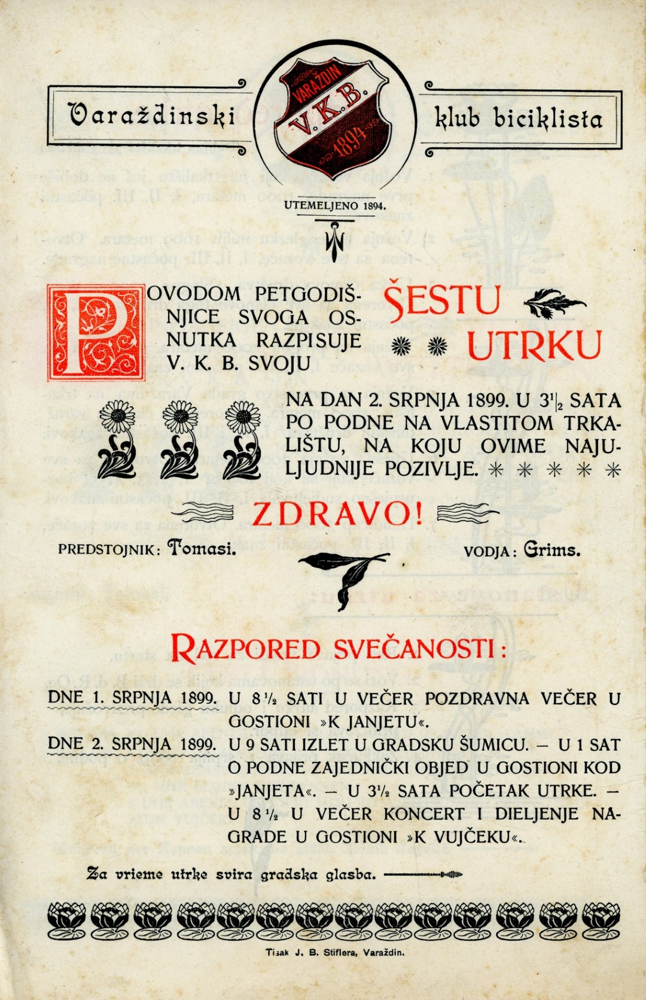
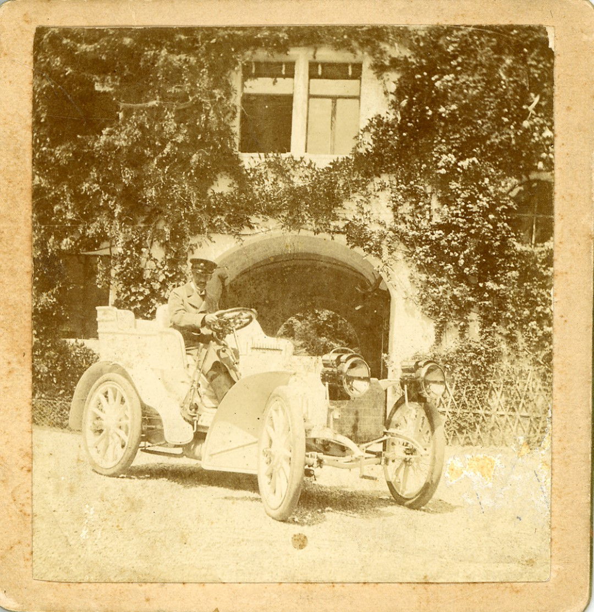
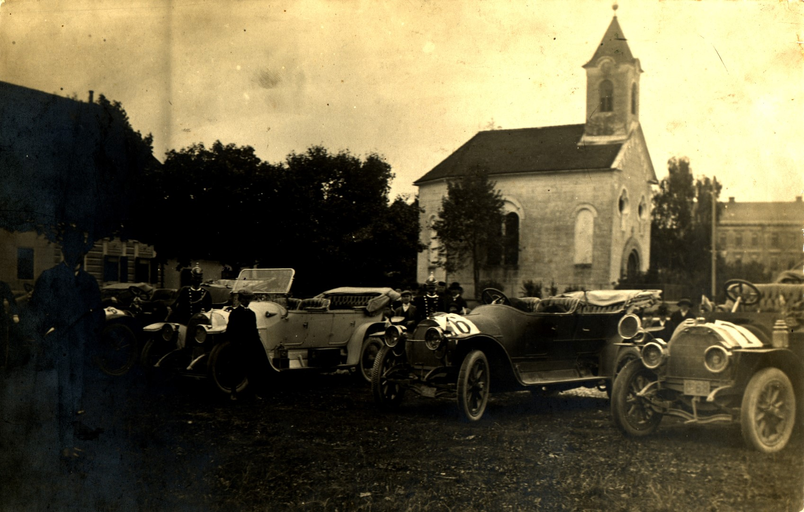
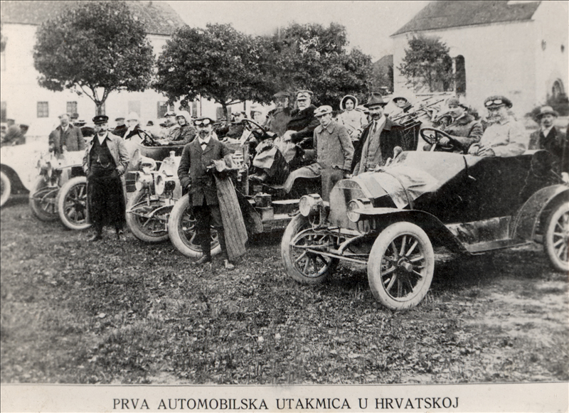
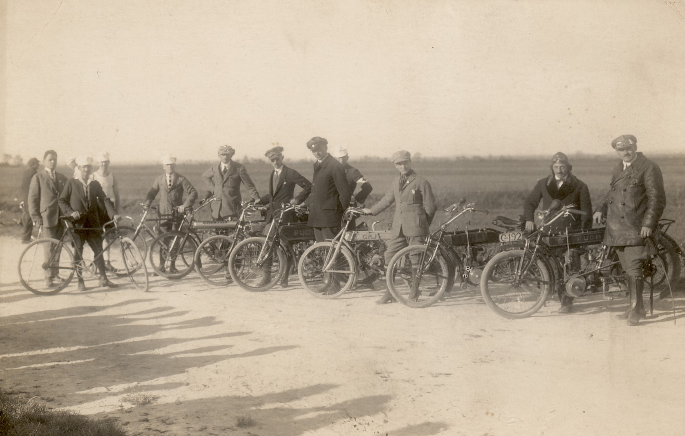
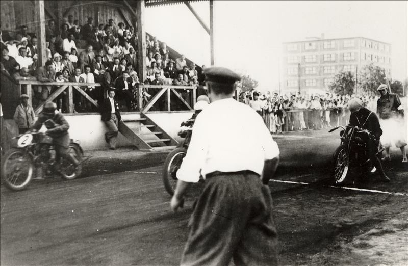
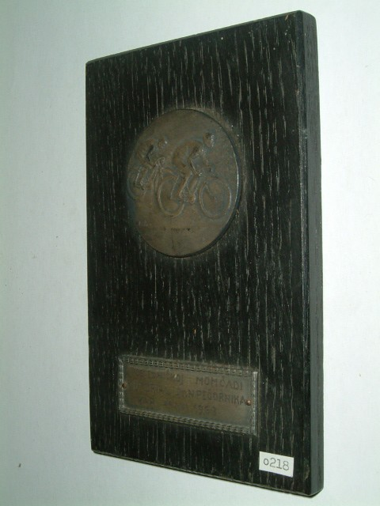
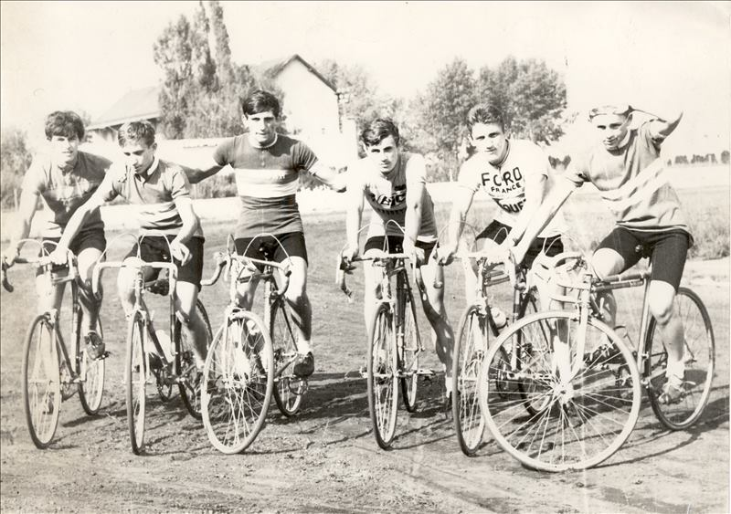

Biciklizam i auto - moto
KRONOLOGIJA
1878.
prvi bicikli u Varaždinu (Mikšić iz Jurketinca, trgovac Cvetičanin)
1885.
prvi sportski biciklist Nikola Pečornik (Varaždin - Ivanec za 80 minuta)
1894.
osnovan Varaždinski klub biciklista - VKB


Poziv VKB na šestu utrku, Varaždin, 1899., GMV 94951
5. 4. 1894.
prva biciklistička utrka Varaždin - Zagreb
29. 6. 1895.
otvoreno biciklističko trkalište u Livadskoj ulici (Ognjena Price danas) s biciklstičkim utrkama
1896.
prvo međunarodno natjecanjae u Varaždinu (i biciklisti iz Pariza, Budimpešte, Beča, Graza i Bratislave)
1897.
osnovano Koturaško društvo Sloga
1898.
grof Marko Bombelles posjeduje prvi automobil U Hrvatskoj

Grof Marko Bombelles u svojem automobilu, početak 20. st., GMV 66668
19. 5. 1898. - 9. 1. 1899.
Ferdinand Budicki, član VKB biciklira Europom i Afrikom, prešao 16758 km
1899.
osnovana XXX sekcija krščanskih biciklista Saveza u Beču
1907.
žene prvi puta nastupaju na natjecanjima
16. 8. 1908.
Milan Meniga, biciklist Sloge, pobjeđuje na utrci Beč - Graz - Beč
1908.
U Varaždinu odmor automobilista u utrci od Beča, preko Varaždina, Zagreba, Banja Luke, Plitvičkih jezera do Splita

Automobili u utrci od Beča do Splita parkirani kod tržnice, Varaždin, 1908., GMV 66672
1909.
Milan Meniga prvak utrke Južnih Slavena na relaciji Ljubljana - Trst
8. 9. 1912.
Prvi hrvatski automobilski klub organizirao utrku dugačku 177,8 km - Zagreb - Varaždin - Zagreb

Učesnici prve hrvatske automobilističke utrke, Varaždin, 1912., GMV 106547
28. 10. 1923.
prva motociklistička utrka Varaždin - Vratno - Varaždin

Utrka biciklista i moto-biciklista Varaždinskog koturaškog društva Sloga, Varaždin, 1923., GMV 93202
1924.
uređeno novo trkalište na Vinokovčaku
1925.
kongres biciklista u Križevcima
1930..
biciklist Vladimir Žabčić drugi na juniorskom prvenstvu Jugoslavije
1933.
osnovan Bicklistički klub Slavija unutar ŠK Slavija
1936.
biciklistička utrka Kroz Hrvatsku i Sloveniju - etapni start i cilj u Varaždinu
1938.
osnovana motociklistička sekcija pri Biciklističkom društvu Sloga
1946.
u sklopu Tekstilca osnovana auto-moto sekcija
1947.
obnovljena sekcija bicklista u RFD Tekstilac
1951.
Josip Pepi Kalčić prvak Hrvatske na teretnom biciklu, kategorija kontraši
3. 6. 1956.
obnovljena djelatnost Biciklističkog društva Sloga
1959.
u sklopu Tekstilca osnovana auto-moto sekcija
1960.
pokrenuta tradicionalna biciklistička utrka Oslobođenje Varaždina
1960.
na stadionu Varteksa otvorena staza za spidvej i osnovan spidvej klub unutar RŠD Varteks

1961.
Valent Medved prvak Jugoslavije u spidveju
1962.
pokrenut Memorijal dr. Nikola Pečornik

1964.
juniori BD Sloga prvaci Hrvatske
1968.
Antun Remar juniorski cestovni prvak Jugoslavije, Franjo Kolarić najbolji junior Jugoslavije na trkalištu, a Sloga osvaja naslove prvaka na cestovnom i brdskom Prvenstvu Hrvatske i Jugoslavije te na prvenstvu Jugoslavije na 4000 m dohvatne vožnje
1970.
BD Sloga juniorski prvak Hrvatske, Mladen Leček juniorski cestovni prvak, a na prvenstvu Europe u SR Njemačkoj za Jugoslaviju nastupaju varaždinski biciklisti Mladen Leček, Stokranjec i Franjo Pomper; Antun Remar pobjednik etape na međunarodnoj utrci Kroz Jugoslaviju

Biciklisti BD Sloga - u sredini s lijeva: Pero Tomašić (prvak Jugoslavije 1969.), Antun Remar (prvak Jugoslavije 1971.), Franjo Kolarić, Varaždin, oko 1968., GMV 106541
1971.
biciklist Antun Remar seniorski prvak Jugoslavije (kao član pulskog Siporexa); biciklist Mladen Leček brdski prvak Jugoslavije
1972.
biciklist Mladen Leček državni prvak na pisti (4000 m) te brdski prvak (također i 1974.)
1973.
biciklist Radoslav Moravec vozi za juniorsku reprezentaciju Jugoslavije, a kasnije i za seniorsku
1980.
osnovano Auto-moto društvo Varaždin i pokrenut moto-klub
1982.
BD Sloga ekipno prvak Hrvatske (Dreven, M. Posavec, T. Vrbnjak)
2003.
osnovan Brdsko biciklistički klub ASI